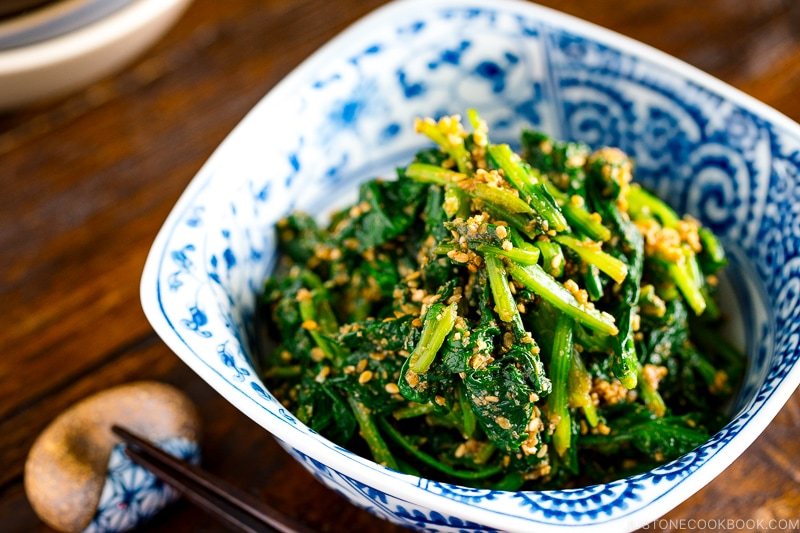

Goma-ae is a popular Japanese side dish consisting of vegetables dressed with sesame sauce. The most popular goma-ae variety is made with spinach that is topped with sesame seeds and miso paste. The name of the dish is derived from two words: goma, meaning sesame, and ae, meaning sauce.
Meal prep time : 10 minutes
Servings : 1